Technical Analysis (Timing)
Charts don't generate ideas — they time the fundamental ideas you already have.
Technical analysis is the last, smallest step in the process: less than 10% of the work, used only to time a trade you already believe in fundamentally. Pull up the chart with a bull or bear predisposition already set, run it through a red/amber/green traffic light, and never let a picture of past price change your mind.
The gist
- TA and PA are TIMING only and make up less than 10% of the process; fundamentals make up around 90% — the chart NEVER generates a trade idea.
- Definitions: Technical Analysis = the study of pattern recognition and formations in price; Price Action = the study of price momentum (covered in video 38).
- The horizon is 20-60 days on daily data zoomed out over months: sub-20-day moves are random noise (day-trading is 50/50), and beyond 120 days fundamentals dominate.
- Order of operations: you ALREADY hold a fundamental predisposition + catalysts BEFORE you open the chart — 'DO NOT let the Chart of past Price change your mind'.
- The Big Mistakes: deriving an idea from a chart then back-filling fundamentals is lazy; shorting a fundamentally-bullish name or longing a fundamentally-bearish name because the chart looks the other way is a 'Sackable offence'.
- The Traffic Light System: RED = timing bad / trend against -> do not trade, watchlist; AMBER = fundamentals starting to play out / trend turning -> consider, half or full; GREEN = timing in favour / continuation or breakout-breakdown -> trade full size. The same chart is green for a long and red for a short.
- Worked patterns: trend up ODFL, trend down TSLA; ranging S/R BILL; reversals Head & Shoulders (XOM), Reverse H&S (ORCL), Cup & Handle, Double Top (PEGA), Double Bottom (AMD); continuations Bullish Flag (XLNX), Bullish Pennant (BLNK), Bearish Flag (CPB), Bearish Pennant (FBHS); Abnormal Volume (SAVE up, KHC down).
- Breakouts are unreliable without a catalyst because order flow is invisible — the seller may just have 'gone to lunch' and will reload the same limit.
- The Tesla cautionary tale: dogmatic shorts who ignored the break of the downtrend fought the market from ~$35-40 to ~$580 and blew up — right fundamentals + bad timing = stop out then miss a 400% run.
- If the timing is wrong, sit back and use the Watchlist; if the timing never comes, you have an Investment, not a Trade.
Where timing sits in the process
- We are medium-term Long/Short portfolio managers operating in the 20-60 day time horizon — the volatility sweet spot between trading and investing.
- The bulk of the work is the Quantitative and Qualitative fundamental processes; timing (technicals) is the small final step layered on top, with only the basics required.
- Timing tools exist to help us optimise entry into a fundamentally-driven idea with catalysts — they do not replace that work.
The systematic process runs Fundamentals -> Timing -> Trade Structure -> Risk Management. Technical analysis lives inside 'Timing', and Anton flags on the slide itself that only the basics are needed there.
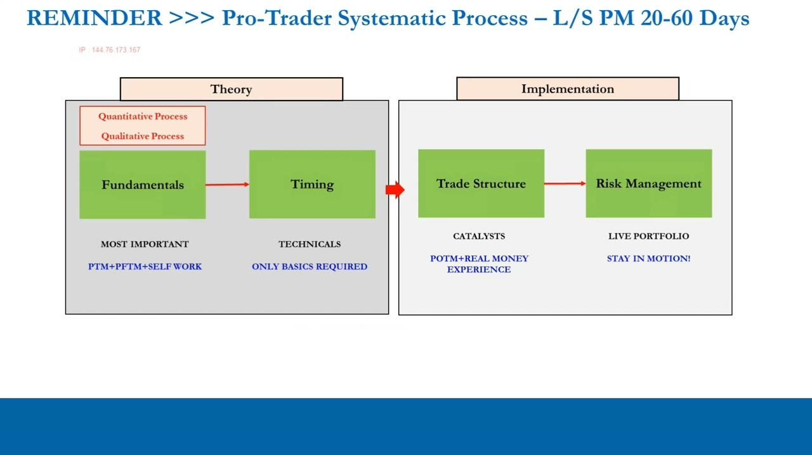
Why the horizon matters: noise vs fundamentals
- Below 20 days, price movement in most stocks is essentially random noise — the IPLT series showed day-trading at literal 50/50 odds.
- Beyond 120 days (out to 1, 3, 5 years) fundamentals are the biggest predictor of price.
- We sit in between as medium-term managers, so we read daily data zoomed OUT over many months to judge the bigger-picture timing for the next 20-60 days.
Because short-term price is random and long-term price is fundamental, technical analysis only adds value over the medium term — and even there, only for timing, never for idea generation.
TA vs PA — the definitions
- Technical Analysis = the study of pattern recognition and formations in price (this video).
- Price Action = the study of price momentum (the next video, 38).
- Both are timing disciplines; the series splits them into two videos for that reason.
Keep the two straight: this chapter is about chart formations (TA); momentum (PA) follows in video 38.
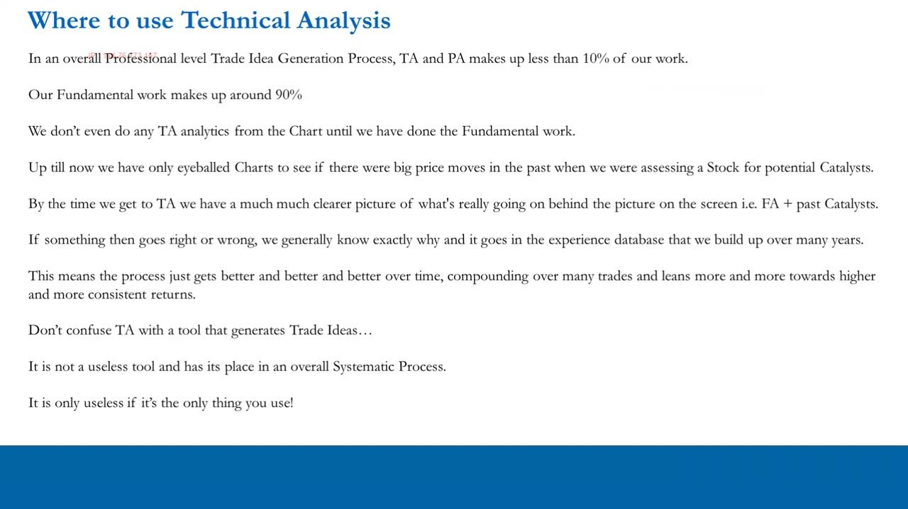
Less than 10% of the work
- In a professional trade-idea process, TA and PA together make up less than 10% of the work; fundamentals make up around 90%.
- We don't run any TA analytics from the chart until the fundamental work is done — until now the series has only eyeballed charts for past price moves when hunting catalysts.
- By the time we reach TA we have a much clearer picture of the fundamentals + past catalysts, so when a position works or fails we generally know exactly why — and it goes in the experience database that compounds over years.
- TA is not useless — it just becomes useless if it is the ONLY thing you use.
The professional attitude: a chart is a photograph of past fundamentals. It is a tool for timing, not a generator of ideas — and knowing why you were right or wrong (which only fundamentals give you) is what makes the process repeatable.
The Big Mistakes
- 1) Getting a trade idea from a chart, then using fundamentals to justify it after — you haven't done the work; it's lazy and you'll get found out.
- 2) Going SHORT a name you are fundamentally BULLISH on because the pattern looks bearish — 'Sackable offence'.
- 3) Going LONG a name you are fundamentally BEARISH on because the pattern looks bullish — 'Sackable offence'.
- No $5bn hedge fund puts on a $250m position 'because a line crossed another line'; before you open the chart you already have a bull or bear predisposition — 'DO NOT let the Chart of past Price change your mind'.
In the sackable-offence cases it doesn't even matter whether you make or lose money — doing the opposite of your own fundamental view advertises that you have no conviction and a chaotic, lazy process. Technicals tell you what you probably should NOT do as much as what you should.
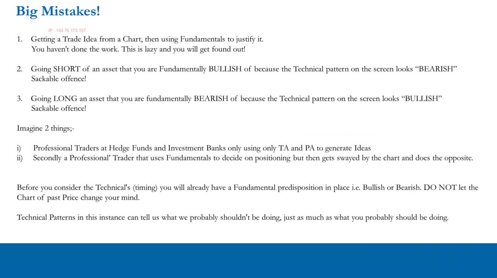
The TA & PA Traffic Light System
- RED — your fundamental idea may be good, but TA/PA says timing is bad (e.g. the trend is against you): DO NOT TRADE, put it on the Watchlist.
- AMBER — the fundamentals look like they're starting to play out (e.g. the trend is turning and may continue): CONSIDER TRADING — watchlist, half, or full position with good risk management.
- GREEN — TA/PA says timing is in your favour (continuation of trend, or a break-out / break-down): TRADE, commit capital with a full position size.
- Crucially the SAME chart is green for one direction and red for the other: an uptrending stock is green for a long and red for a short.
Run every chart through the traffic light against your existing predisposition. Half positions in amber are themselves risk management — you get a toe in so you don't miss it, then top up to full size if it turns green.
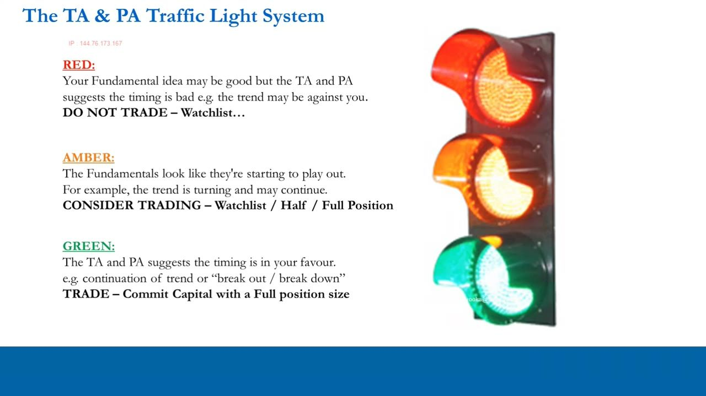
Candlesticks — keep it basic
- Daily open-high-low-close data: the body is formed by the open and close, the wick by the high and low.
- Standard convention: a black body (open above close) is bearish, a white body (close above open) is bullish — but it depends on your charting software (Anton's is reversed: bearish = filled/opaque, bullish = transparent).
- Over a 20-60 day horizon on daily data you do NOT need to go deep into dojis, hammers, hanging men, shooting stars, etc. — the list is endless and adds little.
There is a law of diminishing returns to candlestick minutiae for a medium-term manager. Learn the body/wick basics, check how your own software colours candles, and move on.
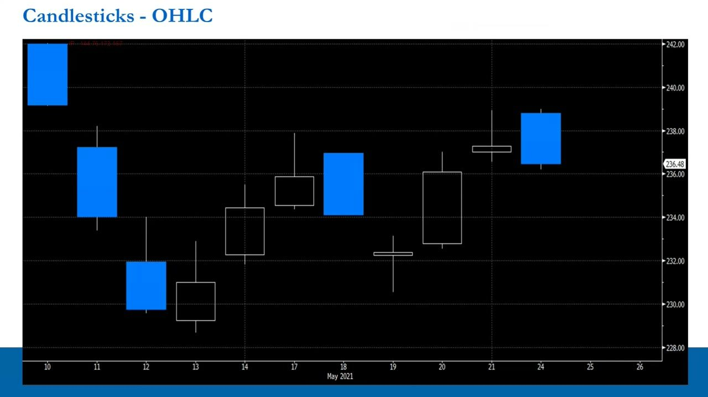
The TA Checklist
- Trending: Upward? / Downward?
- Ranging: Support and Resistance Levels.
- Reversals: Head and Shoulders, Reverse Head and Shoulders, Cup and Handle, Double Top, Double Bottom.
- Continuations: Bullish Flag, Bullish Pennant, Bearish Flag, Bearish Pennant.
- Abnormal Volume: Combined with Fundamental News or Not?
This is the checklist you run at the timing stage. It is not exhaustive — you can add to it — but for a 20-60 day manager the goal is to get the big things right, not to disappear down the endless charting rabbit hole.
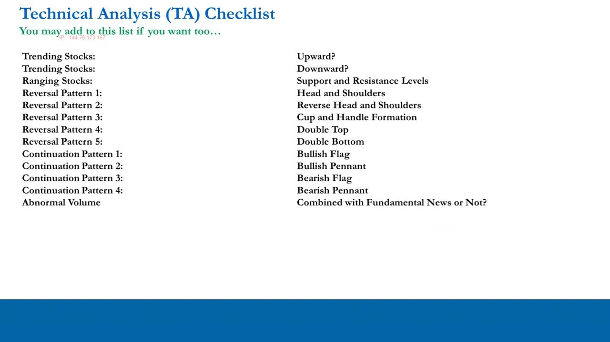
Trending stocks — up (ODFL) and down (TSLA)
- An upward-trending stock (ODFL, Old Dominion Freight Line) is a GREEN light for a bullish predisposition and a RED light for a bearish one.
- A downward-trending stock (TSLA in a descending channel) is the mirror image; how you size in is discretionary — full, half, or leaning in a small starter and adding on confirmation.
- A break of the trend flips the lights: an uptrend broken to the downside becomes red for longs / green for shorts, and vice versa.
Trending stocks are the straightforward case: line up the trend with your predisposition, then use discretion on sizing. There is no hard rulebook on execution — it is probabilistic and situational.
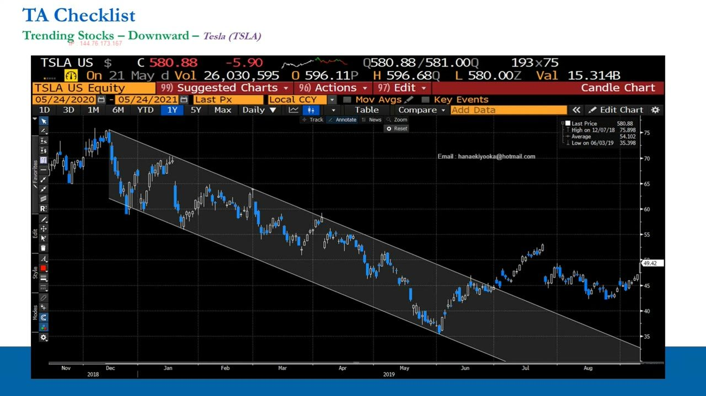
Ranging stocks — support & resistance (BILL)
- Bill Holdings (BILL) shows resistance in the high $160s and a big level just above $190, with support around $140 (support 1) and just above $130 (support 2).
- Ranging stocks are tricky because there is no defined medium-term trend, so you must ask whether your fundamentals + catalysts can actually force a break within 20-60 days — usually an AMBER.
- Don't just 'wait for the breakout': you know nothing about the invisible order flow at those levels.
In a range the market is undecided, so you're not fighting a trend — but you also lack one. Typically you take a partial position to avoid missing it, then add at support (long) or on a break confirmed by fundamental news.
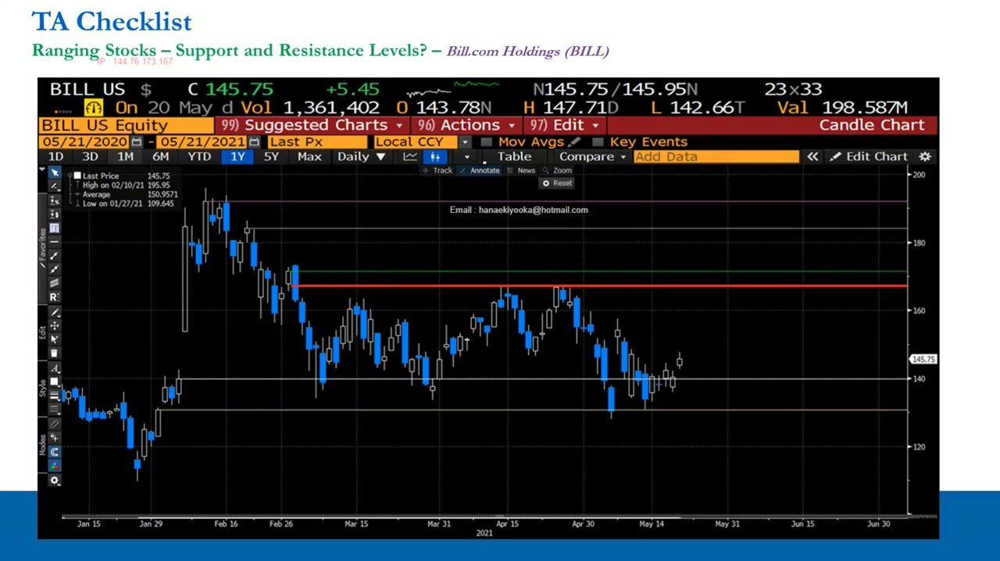
Why breakouts lie without a catalyst
- You cannot know whether a large order at a resistance/support level is tiny, huge, or finished — only the entity or the bank trader working it knows.
- The 'gone to lunch' anecdote: a pension fund releases 50,000 of a 2m-share order to the bank; the last piece clears, the stock pops, technicians pile in — then the manager comes back from lunch/bathroom, reloads the same 167.5 limit, and the breakout buyers have to cut by end of day.
- A break is only reliable when it is ACCOMPANIED by real fundamental news or a catalyst that makes those resting orders get pulled or re-set.
This is the core reason a chart alone can't be trusted: the order flow behind the price is invisible. A breakout with a catalyst is meaningful; a breakout on nothing is just as likely to be a manager stepping away from their desk.
Reversal patterns — H&S, Reverse H&S, Cup & Handle
- Head & Shoulders (Exxon Mobil, XOM, Aug 2020): left shoulder, head, right shoulder with a neckline drawn as support; a break of the neckline down is red for longs / green for shorts.
- Reverse Head & Shoulders (Oracle, ORCL): the chart flipped — a break of the neckline UP is green for a bullish predisposition, red for a bearish one.
- Cup & Handle: the cup is the rounded price move, the handle is the consolidation above resistance after it breaks — a bullish continuation.
Every pattern runs through the same traffic-light logic against your predisposition. The XOM example is done sitting 'in August 2020' — ignore everything to the right, because at the time you wouldn't have seen it.
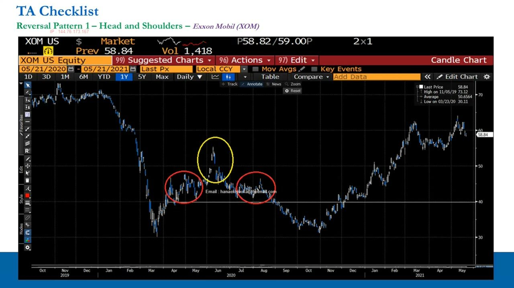
Reversal patterns — Double Top (PEGA) & Double Bottom (AMD)
- Double Top (Pega Systems, PEGA, Feb): the stock fails twice at a level then breaks down — red for longs (watchlist), green/amber for shorts depending on where you come in.
- Double Bottom (Advanced Micro Devices, AMD, late Nov 2020): a level tested and held twice — at minimum an AMBER for a bull, taking a partial position and adding to full size on the breakout.
- Same ranging-stock principles apply: partial position first, add on confirmation, cut if a break is backed by fundamentals against you.
Double tops and bottoms behave like ranging S/R with a bias. Marry them to fundamentals: a double bottom under a bullish thesis with good catalysts is timing agreeing with fundamentals — an amber that becomes green on the break.
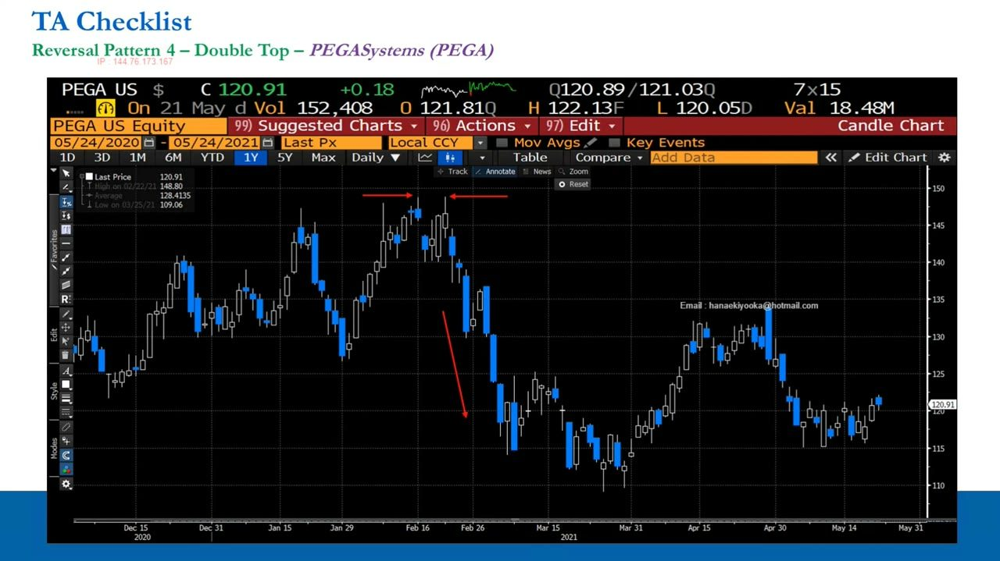
Continuation patterns — flags & pennants (XLNX)
- Bullish Flag (Xilinx, XLNX, Sep 2020): a strong up-move (the flagpole) then a slight lower consolidation (the flag) before continuing higher — a 'big fat green light' for a bull, red for a bear.
- Bullish Pennant (Blink Charging, BLNK): same as the flag but the consolidation forms a pennant shape — jump on it if bullish, stay away if bearish.
- Bearish Flag (Campbell Soup, CPB) and Bearish Pennant (Fortune Brands Home & Security, FBHS): the exact mirror — strong down-move, consolidation up, then continuation lower; green for shorts, stay away if bullish.
Continuations say the existing trend is likely to resume, so they align cleanly with a matching predisposition. When the pattern and your fundamentals disagree, the answer is simply to wait a few weeks.
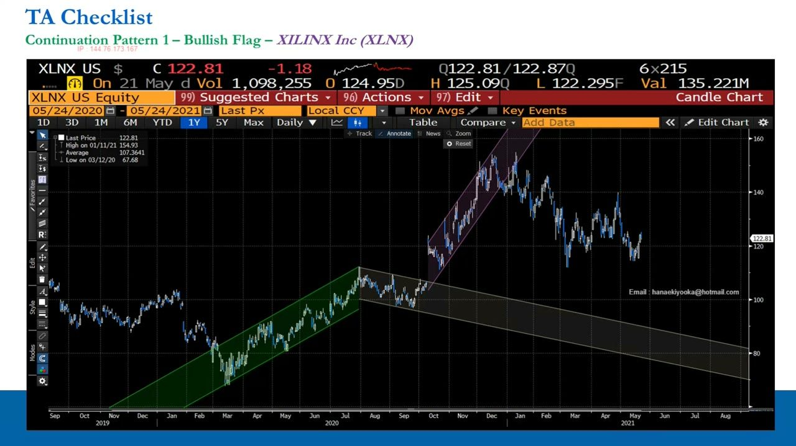
Abnormal Volume (SAVE up, KHC down)
- A large price move on abnormal volume is more significant than the same move on little volume — it signals a big prior seller may be gone and fresh buyers (or sellers) are present.
- Spirit Airlines (SAVE, Nov 2020): a big up-move on a huge volume spike gives comfort you're not the only one seeing the fundamentals — buy a partial position, add on a further break up.
- Kraft Heinz (KHC, Feb 2019): a big down-move on huge volume, and the stock doesn't even rally in the following three months — holders kept dumping; a bull here just had bad timing and was probably plain wrong.
- Always ask: is the volume 'Combined with Fundamental News or Not?'
Volume tells you a move actually mattered — stock changed hands in size. Weighted by whether real fundamental news accompanied it, abnormal volume is a strong confirmation for the direction of your existing thesis.
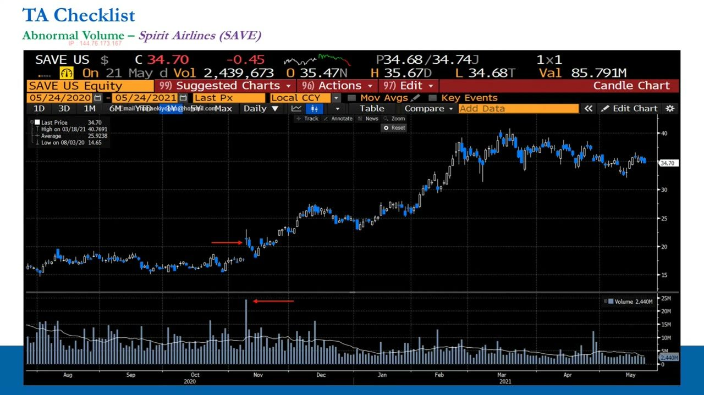
The Tesla cautionary tale
- TSLA was ~$70-75 at end-2018, fell to ~$35-40, then broke its downtrend to the upside; by the 2021 recording it was ~$580.
- Dogmatic bears who ignored the break kept shorting all the way up, got emotionally attached, added more, and eventually blew up — an investment-horizon short they should never have been in.
- Right fundamentals + bad timing without discipline = you stop out on a 10-15% move against you and then miss a ~400% run.
- The disciplined bear who respected the timing simply didn't short — and stayed objective enough to ask whether the thesis itself was wrong.
This is the whole lesson in one chart. For a 20-60 day manager, being wrong just means moving on; the danger is letting a chart you refuse to respect turn a trade into a career-ending investment.
What to do if the timing is wrong — the Watchlist
- If you're convinced of a long or short but the timing looks wrong, sit back and wait — this is why a deep inventory of high-quality ideas matters.
- The Watchlist = every stock you've done a FULL fundamental appraisal on and rate a fundamental long/short, but which lacks catalysts or good timing in the 20-60 day window right now.
- Split ACTIONABLE trade-idea templates from NON-ACTIONABLE ones — the non-actionable ones are really 'Investment Ideas'.
- Be intellectually honest: if catalysts and timing never arrive, you have an Investment, not a Trade. TA also times EXITS and loss-cuts, not just entries — it adds value to execution and risk management.
The cardinal sin is doing brilliant fundamental work and then ignoring timing, so you stop out on a good idea before it works. Good timing over many trades is a significant edge — small, but never to be underestimated.
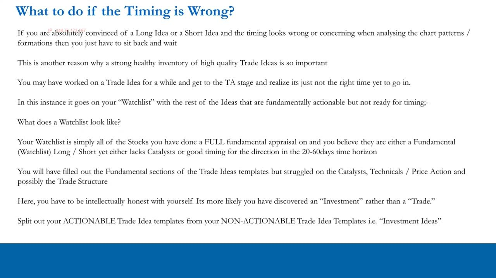
Glossary
- Technical Analysis (TA)The study of pattern recognition and formations in price; used only to time a fundamentally-driven idea over the medium term, making up less than 10% of the process.
- Price Action (PA)The study of price momentum; the other timing discipline, covered in video 38.
- Traffic Light SystemThe timing decision rule: RED = bad timing / don't trade (watchlist); AMBER = timing starting to play out / consider a half or full position; GREEN = timing in your favour / trade full size.
- Fundamental predispositionThe bull or bear view you already hold from fundamental work BEFORE opening the chart; the chart is never allowed to change it.
- Sackable offenceGoing short a fundamentally-bullish name (or long a fundamentally-bearish name) because the chart looks the other way — proof of no conviction and a lazy process.
- NecklineThe support (or resistance) line drawn across a Head & Shoulders (or Reverse H&S) formation; a break of it confirms the reversal.
- Flag / PennantContinuation patterns: a strong trend move (the flagpole) followed by a consolidation shaped like a flag or a pennant, before the trend resumes.
- Abnormal VolumeAn unusually large volume spike accompanying a price move; read as significant — especially when combined with fundamental news — because large stock changed hands.
- Order flowThe invisible resting buy/sell orders behind a price level; because you cannot see them, breakouts without a catalyst are unreliable (the 'gone to lunch' problem).
- WatchlistStocks with a full fundamental long/short appraisal but lacking catalysts or good timing in the 20-60 day window; if timing never comes, the idea is an Investment, not a Trade.